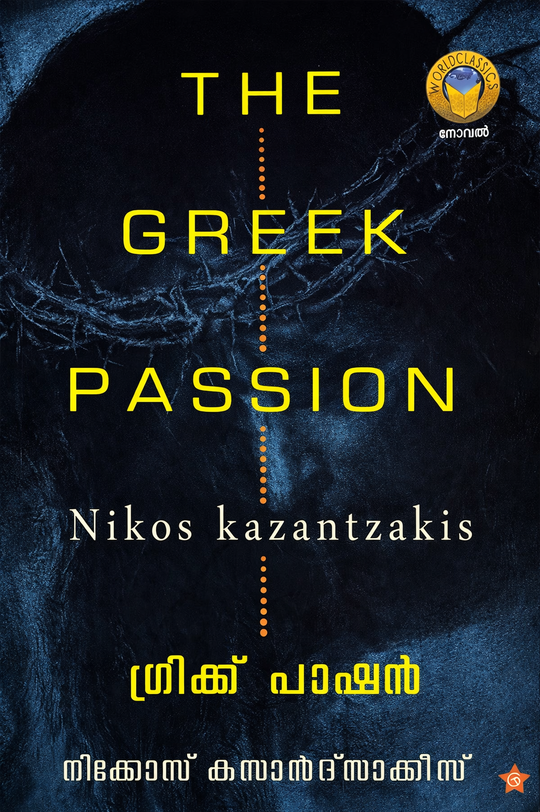

Author: നിക്കോസ് കസന്ത്സാക്കീസ്
Review by: ജോസഫ് പി മാത്യു
ക്രിസ്തുമതത്തിന് അതിന്റെ അടിസ്ഥാന മൂല്യങ്ങൾ നഷ്ടപ്പെട്ടിരിക്കുന്നു എന്നും ക്രിസ്തു മടങ്ങിവന്നാൽ സഭ അദ്ദേഹത്തെ വീണ്ടും കുരിശിലേറ്റും എന്ന ആശയമാണ് “ഗ്രീക്ക് പാഷൻ” എന്ന നോവലിലൂടെ നിക്കോസ് കസൻദ്സാക്കിസ് പങ്കുവെയ്ക്കുന്നത്. ഇത് 1950 ൽ Christ Recrucified എന്ന പേരിലാണ് ഇംഗ്ലീഷിൽ വിവർത്തനം ചെയ്യപ്പെട്ടത്. ലൈകോവ്രിസ്സി എന്ന ഗ്രീക്ക് ഗ്രാമത്തിലെ ജനങ്ങളുടെ ജീവിതത്തിലൂടെ ക്രിസ്തുവിന്റെ പീഡാനുഭവം (Passion of Christ) പുനരാവിഷ്കരിക്കുകയാണ് നോവലിൽ. തുടക്കത്തിൽ എല്ല വർഷവും ഈസ്റ്റർ കാലത്ത് ഗ്രാമത്തിൽ അരങ്ങേറുന്ന ഒരു നാടകമായിട്ടാണ് ഇത് ആസൂത്രണം ചെയ്യപ്പെടുന്നത്. ഗ്രാമത്തിലെ ചില ആളുകളെ ക്രിസ്തുവിന്റെയും, യൂദാസിന്റെയും, മഗ്ദലന മറിയത്തിന്റെയും, പ്രധാന ശിഷ്യന്മാരുടെയും എല്ലാം ഭാഗം അഭിനയിക്കാൻ തെരഞ്ഞെടുക്കുന്നു. ക്രമേണ ഈ ആളുകൾ തങ്ങളുടെ കഥാപാത്രങ്ങളായി പരിണമിക്കുന്നു. “അതെനിക്കറിയാം. നിങ്ങൾ ക്രിസ്ത്യാനികൾക്ക് ഭരണകൂടമാണ് ദൈവം. ഏത് പിശാചു ഭരിച്ചാലും നിങ്ങൾ ആ പിശാചിന്റെ കാല് നക്കും. ഇരിക്കാൻ പറഞ്ഞാൽ കിടക്കും.” ഇതുപോലെയുള്ള നിരീക്ഷണങ്ങൾ നോവലിൽ ധാരാളമുണ്ട്. സോഷ്യലിസമാണ് ലക്ഷ്യം; ജനാധിപത്യം അതിലേക്കുള്ള മാർഗമാണ് എന്ന് കസൻദ്സാക്കിസ് കരുതിയിരുന്നു. ക്രിസ്തുമതം നിലനിൽക്കുന്ന കാലത്തോളും ഈ നോവലിന്റെ പ്രസക്തി നഷ്ടപ്പെടില്ല എന്നാണ് എന്റെ അഭിപ്രായം. മികച്ച വിവർത്തനമാണ് കെ സി വർഗീസ് നടത്തിയിരിക്കുന്നത്. എൺപതുകളുടെ തുടക്കത്തിൽ വർഗീസിനെ ഞാൻ പരിചയപ്പെടുന്ന കാലത്തു തന്നെ അദ്ദേഹത്തിന് കസൻദ്സാക്കിസ് ഒരു ഒബ്സഷൻ ആയിരുന്നു. “കസൻദ്സാക്കിസസിന്റെ ലോകം” എന്നൊരു പുസ്തകവും എഴുതി പിന്നീട്. ഞാൻ പറഞ്ഞുവരുന്നത് എഴുത്തുകാരനെകുറിച്ച് വിശദമായി റിസർച്ച് ചെയ്തിട്ടുള്ള ആൾ ആയതുകൊണ്ട് വർഗീസിന്റെ വിവർത്തനത്തിന്റെ വായനാക്ഷമത മികച്ചതാണ് എന്നാണ്. പൊതുവെ കസൻദ്സാക്കിസ് വായന നമ്മുടെ വായനയുടെ ചക്രവാളം വികസിപ്പിക്കും. “സോർബ ദ ഗ്രീക്ക്” ആണ് അദ്ദേഹത്തിന്റെ മാസ്റ്റർപീസ് ആയി കരുതപ്പെടുന്ന നോവൽ.
ക്രിസ്തുവിൻ്റെ ആറാം തിരുമുറിവ് നിരോധനത്തിനെതിരെ 1986 ൽ ആണെന്ന് തോന്നുന്നു ആലക്കോട് പ്രഭാ ആർട്ട്സ് ക്ലബ്ബിൻ്റെ ഒരു പ്രതിഷേധ കൂട്ടായ്മ ഉണ്ടായിരുന്നു. ഇപ്പോഴത്തെ ടിനു ടെക്സ്റ്റൈൽസിൻ്റെ മുമ്പിലായി. അന്ന് അത് ഉത്ഘാടനം ചെയ്ത് സംസാരിച്ചത് ശ്രീ. കെ സി വർഗീസായിരുന്നു.
അക്കാലത്തും പിന്നീടും അദ്ദേഹം ധാരാളം എഴുതിയിരുന്നു.👍😊
1987-ൽ ഞാൻ ഇടമറുകിന്റെ എതീസ്റ്റ് പബ്ലിഷേഴ്സിന്റെ ഒരു മെംബർ ആയിരുന്നു. അന്ന് ജോധ്പൂർ എയർഫോഴ്സ് സ്റ്റേഷനിൽ ആണുള്ളത്. അന്നാണ് ആറാം തിരുമുറിവ് നാടകം വയിക്കുന്നത്. അതിന് മുൻപ് തന്നെ കസാൻദ് സാക്കീസിന്റെ ക്രിസ്തുവിന്റെ അന്ത്യ പ്രലോഭനം വായിച്ചിരുന്നു. അതുകൊണ്ടായിരിക്കാം സാഹിത്യപരമായി ആന്റെണിയുടെ ആറാം തിരുമുറിവ് നാടകം ഒരു പരാജയം ആയി ആണ് തോന്നിയിട്ടുളളത്.
പ്രതിഷേധകൂട്ടായ്മ മാത്രമായിരുന്നില്ല, ഒരു ടെമ്പോ വാഹനത്തിൽ, ക്രിസ്തുവിൻ്റെയും ശിഷ്യന്മാരുടേയും വേഷമണിഞ്ഞ് യാത്ര നടത്തിയതോർക്കുന്നു. (നമ്മുടെ ബാബു സാർ ശിഷ്യരിലൊരാളുടെ വേഷത്തിലായിരുന്നു)